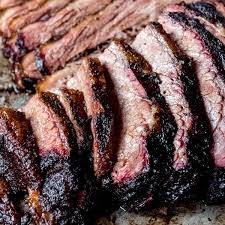

Texas Smoked Brisket

Texas Smoked Brisket
Brisket is a cut of meat that typically comes from cows.Although it can be cooked a variety of different ways, one of the best methods is to cook at a low temperature in a smoker grill.This recipe shows a smoking style originating from Texas that is sure to make your Brisket taste perfect!
Ingredients
- wood chips
- 1/4 cup paprika
- 1/4 cup white sugar
- 1/4 cup ground cumin
- 1/4 cup cayenne pepper
- 1/4 cup brown sugar
- 1/4 cup chili powder
- 1/4 cup garlic powder
- 1/4 cup onion powder
- 1/4 cup kosher salt
- 1/4 cup freshly cracked black pepper
- 10 pounds beef Brisket
Steps
- Gather the ingredients.
- Soak wood chips in a bowl of water, 8 hours to overnight.
- Mix paprika, white sugar, cumin, cayenne pepper, brown sugar,
chili powder, garlic powder, onion powder, salt, and black pepper together in a bowl.
Rub the spice mixture over the entire brisket; refrigerate for 24 hours.
- Preheat smoker to between 220 degrees F (104 degrees C) and 230 degrees F (110 degrees C). Drain wood chips and place in the smoker.
- Smoke brisket in the preheated smoker until it has an internal temperature of 165 degrees F (74 degrees C), about 12 ½ hours. Wrap brisket tightly in butcher paper or heavy-duty aluminum foil and return to smoker.
- Continue smoking brisket until an internal temperature of 185 degrees F (85 degrees C) is reached, about 1 hour more.